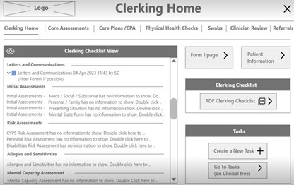
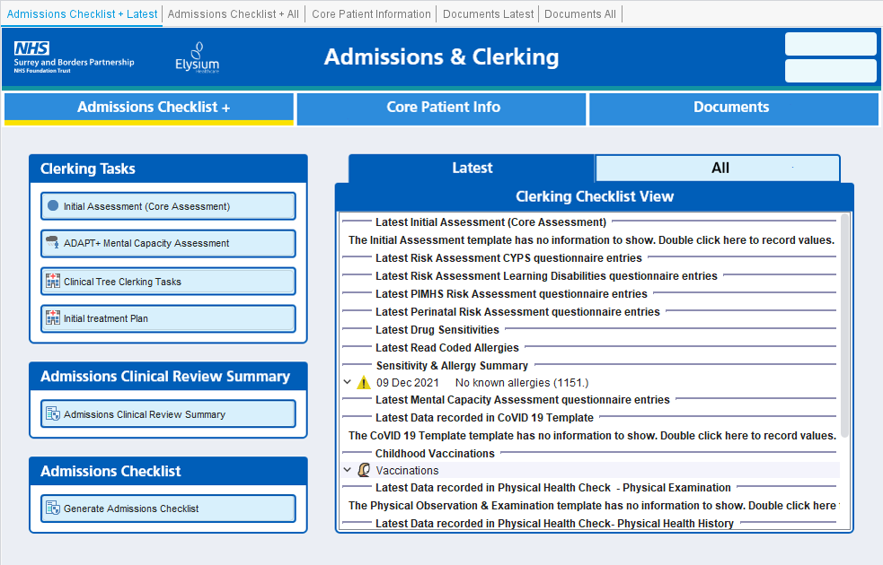

Emerald Place Project

Project Outline Statement
In November 2023, SABP opened a new 12 bed inpatient unit for young people, known as Emerald Place Clinic in partnership with Elysium Healthcare. This project provided a digital EPR solution using SystmOne for the new CAMHS Tier 4 inpatient unit that was used by both SABP and Elysium staff at Emerald Place. Using SystmOne as Emerald Place’s EPR ensures a single electronic patient record that can be accessed and updated by all SABP Services providing care to a Young Person throughout the CAMHS care pathway. This new SystmOne Inpatient solution also provided the blueprint to roll out new SystmOne units to other SABP Inpatient Services in future, as part of the Adapt+ programme.
The new digital solution using SystmOne was developed to support the new CAMHS Tier 4 Inpatient Service and integration with existing SABP CAMHS pathways. Using SystmOne as a solution ensures the recording of information accurately & easily, creating an efficient workflow for staff. SystmOne provides a trusted, safe and secure EPR platform which ensures good data quality from service launch and fulfills national data compliance requirements.
Date & Duration:
- January 2023 - June 2023 (Development & Prototype Build)
Research Artifacts
- Research Sessions were held with the CAMHS Tier 4 Provider Collaborative to understand their current ways of working and the potential changes once Emerald Place opens
- Participated in operationally led workshop to discuss changes to the referral process for Emerald Place, including how referrals of non-Surrey Young People will be handled
- Due to there not being an outlined stakeholder or future product audience/user we had to be flexible and intuitive with who we developed the project alongside. This included working with private organisations and other areas of Surrey and Borders where individuals could reflect the future users of the Emerald Place solution.
User Personas
User Personas were gathered by research staff to understand the needs, requirements and pain points of the future users of the Emerald Place system.

User Journey Maps
Journey maps were also created to understand the pathway of the user. As Emerald Place is a new inpatient unit there are a number of different clinical roles to understand and unpack. Journey maps help deliver this information to the designer.

Project Goals & Challenges
Pain Points
- The Service is not yet established so operational processes are not yet defined and staff are not in post
- SABP has not operated a CAMHS Tier 4 GAU ward before, so there is little internal experience to leverage
- Inpatient Services need a wide range of EPR features and functionality, resulting in a large scope for the Minimum Viable Product
Goals
- Enables the launch of a new CAMHS Tier 4 Inpatient Unit, allowing Young People to be treated closer to their home & community
- The new EPR will provide a secure and efficient way to record and view all aspects of Inpatient care provided, aligning with Clinical & Operational models
- The new EPR is expected to fit with the CAMHS Care Pathway (from referral to discharge) and will allow other SABP Services to easily access patient data recorded during admission
- It will support the Surrey Heartlands CAMHS Tier 4 Provider Collaborative to refer to Emerald Place for admission and give visibility of capacity
- A new SystmOne solution will ensure that the Service can record information accurately & easily, creating an efficient workflow for staff
- The new EPR will ensure safe storage of information and will provide a single source of truth for patient
- Due to efficient workflow, staff will have more time available for patient care, enabling better patient outcomes
- It will support both the mandatory National reporting requirements and internal reporting needs for both SABP and Elysium
- The use of the SystmOne implementation will act as a blueprint to roll out new SystmOne units to other SABP Inpatient Services as part of the Adapt+ programme
SystmOne out of the box
The video above displays the out of the box functionality provided by SystmOne. Without any design team intervention this is what can be configured within the system. The main drawbacks are as follows:
- Information is unclear and unstructured; buttons and clinical information can be easily missed and unnoticed. This design presents a clinical risk as patient information can be easily ignored or missed.
- When developments are applied screens can get busy and unusable very quickly. There is no awareness of design principles or designing for the benefit of the user.
- There is no consideration for Information Architecture (where information sits and why it logically sits there).
- Designs are not accessible, making information very hard to read and understand.
- Actions are very hard to notice, the UI design does not support call to actions or prompting.
The work below will show you how we develop a product and implement our work within SystmOne to completely overhaul the out of the box functionality SystmOne provides. Making for a much smoother, more comfortable, and safer user experience.
My Role & Contribution
- Supported the development of the design implementation aspects of this project
- Managed two UX designers, organising testing sessions, product development and designer workload under significant timescale pressure
- Worked with private provider stakeholders to organise and run co-design workshops and Information architecture mapping sessions
- Reported and presented design progression to a weekly panel meeting, answering questions and supporting decisions made during the design process
Working with our support teams
- App Support Team: Assists with the configuration of the new SystmOne Unit and build of the features and functionalities in SystmOne Live, ready to support the Unit after Go Live.
- Learning & Adoption Team: Provides training for all Emerald Place staff on the new Inpatient Unit, in addition to CYPS Services and the CAMHS Tier 4 Provider Collaborative Service.
- Digital Information Service Team: Support the MHSDS (Mental Health Service Data Set) reporting requirements and how these relate to the Strategic Reporting Extract from SystmOne.
- Information Governance Team: Ensures the SystmOne solution is compliant from an IG perspective and to support with the DPIA for the new Service.
- Digital Clinical Safety Team: Ensures the SystmOne solution is compliant from a Digital Clinical Safety perspective and to contribute to the approach for carrying out Digital Clinical Hazard Workshops, assessing and mitigating any risks associated with the EPR.
Alpha Phase
Architecture Maps
Architecture Maps were developed to map out the information required for the electronic patient record system. Mapping in this way allowed for the designers to funnel information into specific areas efficiently. This in turn would help improve the user experience as information would be stored logically, helping users both record and analyse information efficiently.

Sketches - Lo-Fi Designs
Initial lo-fi sketches were produced by designers to help map out page sets. This work produced alongside the information architecture map helped create a first look at navigation. The sketch below displays the initial draft of how information would be displayed for the clerking process. We can see a number of buttons allow clinical staff to complete clerking actions including, initial assessments, care plans, physical health checks and swabs. Aligned to the right hand side shows a view/checklist feature. The designers felt that a feature like this built within the patient record could help staff have a visual track record of what has been completed for clerking and what hasn't.

Below you can now see how the lo-fi design has been developed further within Adobe XD to produce a functional prototype. Designers were able to use this build within co-design workshops to help give clinical users an experience to navigate the potential solution themselves. Providing a prototype that users can actually play around with provides a better chance for more in depth and meaningful feedback to be received.
How we measured Alpha Success
- Gaining signoff and approval from private provider services that reflect our future users of the Emerald Place system
- Completing an in depth architecture map, this would later be used to reference the entire product creation in a project reflection report
- Meeting the targeted deadline for prototype completion
Beta Phase
Developing the MVP
Shown below is an image of the fully developed initial prototype for Admissions and Clerking. We have seen how this product has been developed from initial sketches, lo-fi prototypes and full working solutions within the electronic patient record. Users are able to enjoy a more visual experience helping navigate the various clerking tasks with the ability to view whether particular forms have been completed or not.
The video click through below displays the solution in it's entirety. Users are able to navigate a design following our trust wide design system, providing a consistent visual experience. Users are also able to access various features that feed into our solution, this includes, a trust wider initial assessment, pop-up clinical tree task reminders, clinical questionnaires and automated microsoft word summary documents.
Planned Product Benefits
- Increase in completion speed for clinical processes
- Greater ease of use for clinical roles
- Reliable single source of truth for patient information, reducing the chance of incorrect clinical decision making
- Greater visibility of patient pathway progression
Outcome & Handover
The Emerald Place project was a great success in terms of completion of the alpha phase and development of the clerking process pages. Unfortunately, due to a change in responsibility for the inpatient service the provider the patient record changed to support the Elysium healthcare system called Care Notes. The design team therefore had to put a halt to the electronic patient record development. Even though the project came to an end, the design team was able to reuse a lot of the assets created in projects produced following Emerald Place. Our design team had also been able to set the standard for producing a new production process when making a new unit within the electronic patient record. Since the end of the project other design teams have learned from our developments and best practices.
What I learned from this project
- How to manage staff efficiently when there are serious deadlines
- How to manage staff under very stressful conditions. Putting staff emotions and comfortability at the forefront. When stress is seriously heightened this takes a toll on the energy and output of staff
- Using support efficiently and asking the right questions